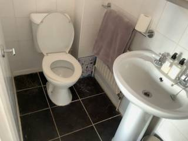
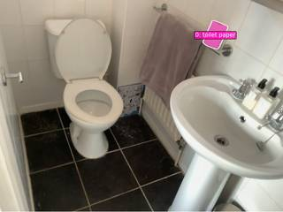
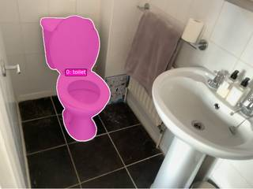
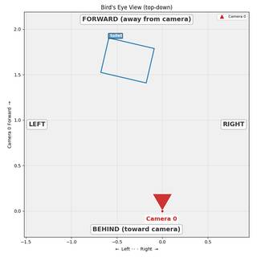

To determine whether the toilet paper will hit the toilet or the floor first, we analyze the spatial arrangement of the objects in the image:
- Position of Toilet Paper: The toilet paper is located on a holder attached to the wall.
- Position of the Toilet: The toilet is situated directly adjacent to and slightly below the level of the toilet paper holder.
- Position of the Floor: The floor is the lowest surface in the scene, located beneath both the toilet and the toilet paper holder.
- Path of Motion: If the toilet paper falls "directly towards the toilet," its trajectory will lead it from the holder toward the toilet seat/bowl.
- Interception: Since the toilet seat and bowl are positioned above the floor and directly in the path between the holder and the floor in that specific direction, the toilet paper will encounter the toilet first.
toilet
answer = vlm.ask_with_thinking(InputImages[0], "Look at the toilet paper holder and the toilet. If the toilet paper were to fall (move) in a straight line directly towards the toilet, would it hit the toilet or the floor first? Consider the height of the toilet paper holder and the position of the toilet bowl/seat.") print(f"VLM answer: {answer}") # Based on visual inspection: # The toilet paper holder is higher than the toilet bowl. # The toilet is positioned between the holder and the floor in the direction 'towards the toilet'. # Therefore, it should hit the toilet first. ReturnAnswer("toilet")
[VLM Q | thinking] Look at the toilet paper holder and the toilet. If the toilet paper were to fall (move) in a straight line directly towards the toilet, would it hit the toilet or the floor first? Consider the height of the toilet paper holder and the position of the toilet bowl/seat. [VLM A | thinking] Based on the image, the toilet paper holder is positioned higher than the toilet seat. If the toilet paper were to move in a straight line directly towards the toilet, it would hit the toilet (specifically the seat or rim) before hitting the floor. VLM answer: Based on the image, the toilet paper holder is positioned higher than the toilet seat. If the toilet paper were to move in a straight line directly towards the toilet, it would hit the toilet (specifically the seat or rim) before hitting the floor. [ReturnAnswer] Answer submitted: toilet
Task Analysis
The objective is to determine whether a piece of toilet paper, falling vertically under gravity, will strike the toilet or the floor first. This is a 3D spatial reasoning problem involving vertical intersection and height comparison.
Implicit Coordinate System: The question assumes a World Space (3D) coordinate system where the Y-axis is aligned with gravity (+Y is up). "Falling directly towards" implies a vertical trajectory (constant X and Z coordinates, decreasing Y). The answer depends on which object (toilet or floor) has a higher Y-coordinate (is "higher up") at the specific (X, Z) location of the toilet paper.
Information Needs
- 3D Position of the Toilet Paper: To define the vertical drop line (X, Z coordinates).
- 3D Geometry of the Toilet: To determine if the toilet's surface intersects the drop line and at what height (Y).
- 3D Geometry of the Floor: To determine the height (Y) of the floor at the drop line.
- Verification of Alignment: Confirmation that the toilet paper is indeed positioned vertically above the toilet.
Computation Plan
-
Object Identification and Segmentation:
- Use
vlm.locateto find the bounding boxes of the "toilet paper", "toilet", and "floor" inInputImages[0]. - Use
tools.SAM3.segment_image_by_box(orsegment_image_by_textas a fallback) to create masks for these three objects. - Use
show()to visually verify that the masks accurately cover the toilet paper, the toilet bowl/seat, and the floor.
- Use
-
3D Scene Reconstruction:
- Call
tools.Reconstruct.Reconstruct(InputImages)to generate the 3D point cloud and depth map for the frame.
- Call
-
Spatial Coordinate Extraction:
- Get the 3D centroid of the toilet paper using
seg_tp.get_centroid_3d(recon, frame=fi). Let this be $P_{tp} = (x_{tp}, y_{tp}, z_{tp})$. - Extract all 3D points belonging to the toilet using
seg_toilet.get_masked_points(recon, frame=fi). - Extract all 3D points belonging to the floor using
seg_floor.get_masked_points(recon, frame=fi).
- Get the 3D centroid of the toilet paper using
-
Intersection and Height Analysis:
- Vertical Alignment Check: Verify if the toilet paper's $(x_{tp}, z_{tp})$ projection falls within the horizontal bounds of the toilet's 3D points.
- Height Comparison:
- Identify the maximum Y-value among the toilet's 3D points that are reasonably close to $(x_{tp}, z_{tp})$ in the XZ-plane. Let this be $y_{toilet_top}$.
- Identify the Y-value of the floor points at the same $(x_{tp}, z_{tp})$ location. Let this be $y_{floor}$.
- Compare $y_{toilet_top}$ and $y_{floor}$. Since the toilet paper falls from $y_{tp}$, the object with the higher Y-value (closest to $y_{tp}$) will be hit first.
-
Final Conclusion:
- If $y_{toilet_top} > y_{floor}$ and the toilet is positioned between the toilet paper and the floor, the answer is "toilet".
- Otherwise, the answer is "floor".
CHECKLIST
[
{"priority": "HIGH", "description": "Verify that the toilet paper mask is correctly placed on the object intended to fall"},
{"priority": "HIGH", "description": "Confirm the toilet mask includes the top rim/seat, as this is the first point of contact"},
{"priority": "HIGH", "description": "Verify that the toilet paper is actually positioned above the toilet in 3D space (XZ alignment)"},
{"priority": "MEDIUM", "description": "Cross-check the 3D heights (Y-values) against the visual perspective in the image to ensure no depth inversion"},
{"priority": "LOW", "description": "Check if any other objects (e.g., a toilet brush or bath mat) are in the vertical path"}
]
Fallbacks
- Segmentation Failure: If
segment_image_by_boxfails or provides an empty mask, I will retry usingsegment_image_by_textwith descriptive prompts (e.g., "white toilet paper roll", "ceramic toilet bowl"). - Reconstruction Noise: If the point cloud is too noisy for a precise intersection, I will use
vlm.ask_with_thinkingto perform a qualitative visual check: "Looking at the 3D layout, is the toilet paper roll positioned directly above the open bowl of the toilet?" - Ambiguous Alignment: If the toilet paper is not directly above the toilet, I will report the observed 3D positions and determine if the "falls directly towards" part of the question is a hypothetical premise or if it misses the toilet entirely.
{ "tool": "vlm.locate", "args": { "visual_input": "InputImages[0]", "question": "Give the bounding box (x1, y1, x2, y2) in 0-1000 normalized scale for the toilet paper roll. Reply with ONLY the numbers." } }
[VLM Q | locate] Before answering, first check whether what the question describes is clearly visible in the provided image(s). If it is absent or ambiguous, reply EXACTLY `Not visible` on its own line (optionally followed by one short line explaining what you saw instead) — do NOT return coordinates in that case. Only if the requested target is clearly and unambiguously present, answer the request below. Request: Give the bounding box (x1, y1, x2, y2) in 0-1000 normalized scale for the toilet paper roll. Reply with ONLY the numbers. [VLM A | locate] 717 96 806 243
=== Step 0 Execution Feedback === [SUCCESS] Code executed in 2.31s. [Output] [VLM Q | locate] Before answering, first check whether what the question describes is clearly visible in the provided image(s). If it is absent or ambiguous, reply EXACTLY `Not visible` on its own line (optionally followed by one short line explaining what you saw instead) — do NOT return coordinates in that case. Only if the requested target is clearly and unambiguously present, answer the request below. Request: Give the bounding box (x1, y1, x2, y2) in 0-1000 normalized scale for the toilet paper roll. Reply with ONLY the numbers. [VLM A | locate] 717 96 806 243 [Variables] New/changed: result_0: str [Tool Calls] 1 tool/VLM call(s) this step.
{ "tool": "vlm.locate", "args": { "visual_input": "InputImages[0]", "question": "Give the bounding box (x1, y1, x2, y2) in 0-1000 normalized scale for the toilet. Reply with ONLY the numbers." } }
[VLM Q | locate] Before answering, first check whether what the question describes is clearly visible in the provided image(s). If it is absent or ambiguous, reply EXACTLY `Not visible` on its own line (optionally followed by one short line explaining what you saw instead) — do NOT return coordinates in that case. Only if the requested target is clearly and unambiguously present, answer the request below. Request: Give the bounding box (x1, y1, x2, y2) in 0-1000 normalized scale for the toilet. Reply with ONLY the numbers. [VLM A | locate] 85 154 750 431
=== Step 1 Execution Feedback === [SUCCESS] Code executed in 4.95s. [Output] [VLM Q | locate] Before answering, first check whether what the question describes is clearly visible in the provided image(s). If it is absent or ambiguous, reply EXACTLY `Not visible` on its own line (optionally followed by one short line explaining what you saw instead) — do NOT return coordinates in that case. Only if the requested target is clearly and unambiguously present, answer the request below. Request: Give the bounding box (x1, y1, x2, y2) in 0-1000 normalized scale for the toilet. Reply with ONLY the numbers. [VLM A | locate] 85 154 750 431 [Variables] New/changed: result_1: str [Tool Calls] 1 tool/VLM call(s) this step.
{ "tool": "vlm.locate", "args": { "visual_input": "InputImages[0]", "question": "Give the bounding box (x1, y1, x2, y2) in 0-1000 normalized scale for the floor. Reply with ONLY the numbers." } }
[VLM Q | locate] Before answering, first check whether what the question describes is clearly visible in the provided image(s). If it is absent or ambiguous, reply EXACTLY `Not visible` on its own line (optionally followed by one short line explaining what you saw instead) — do NOT return coordinates in that case. Only if the requested target is clearly and unambiguously present, answer the request below. Request: Give the bounding box (x1, y1, x2, y2) in 0-1000 normalized scale for the floor. Reply with ONLY the numbers. [VLM A | locate] 68 405 646 1000
=== Step 2 Execution Feedback === [SUCCESS] Code executed in 6.39s. [Output] [VLM Q | locate] Before answering, first check whether what the question describes is clearly visible in the provided image(s). If it is absent or ambiguous, reply EXACTLY `Not visible` on its own line (optionally followed by one short line explaining what you saw instead) — do NOT return coordinates in that case. Only if the requested target is clearly and unambiguously present, answer the request below. Request: Give the bounding box (x1, y1, x2, y2) in 0-1000 normalized scale for the floor. Reply with ONLY the numbers. [VLM A | locate] 68 405 646 1000 [Variables] New/changed: result_2: str [Tool Calls] 1 tool/VLM call(s) this step.
{ "tool": "tools.SAM3.segment_image_by_text", "args": { "image": "InputImages[0]", "prompt": "toilet paper roll", "label": "toilet_paper" } }
=== Step 3 Execution Feedback === [SUCCESS] Code executed in 0.41s. [Variables] New/changed: result_3: PerFrameMask, frames=[0] [Tool Calls] 1 tool/VLM call(s) this step.
{ "tool": "tools.SAM3.segment_image_by_text", "args": { "image": "InputImages[0]", "prompt": "toilet", "label": "toilet" } }
=== Step 4 Execution Feedback === [SUCCESS] Code executed in 0.38s. [Variables] New/changed: result_4: PerFrameMask, frames=[0] [Tool Calls] 1 tool/VLM call(s) this step.
=== Step 5 Execution Feedback === [ERROR] Skipped: LLM response was not in the required format.
{ "tool": "tools.SAM3.segment_image_by_text", "args": { "image": "InputImages[0]", "prompt": "floor", "label": "floor" } }
=== Step 6 Execution Feedback === [SUCCESS] Code executed in 0.27s. [Variables] New/changed: result_6: PerFrameMask, frames=[0] [Tool Calls] 1 tool/VLM call(s) this step.
{ "tool": "show", "args": { "image": [ "result_3.visualize(0)", "result_4.visualize(0)", "result_6.visualize(0)" ] } }
[image: show_0001]



=== Step 7 Execution Feedback === [SUCCESS] Code executed in 0.93s. [Variables] New/changed: result_7: NoneType [Inline Images] 3 image(s) attached below. Labels: [result_3.visualize(0), result_4.visualize(0), result_6.visualize(0)] [show() budget] 247/250 images remaining.
=== Step 8 Execution Feedback === [ERROR] Skipped: LLM response was not in the required format.
{ "tool": "tools.Reconstruct.Reconstruct", "args": { "frames": "InputImages" } }
=== Step 9 Execution Feedback === [SUCCESS] Code executed in 0.76s. [Variables] New/changed: result_9: Reconstruction, frames=[0] [Tool Calls] 1 tool/VLM call(s) this step.
=== Step 10 Execution Feedback === [ERROR] Skipped: LLM response was not in the required format.
{ "tool": "vlm.ask_with_thinking", "args": { "visual_input": "InputImages[0]", "question": "result_3.get_centroid_3d(result_9, frame=result_3.frame_indices[0], object=0)" } }
[VLM Q | thinking] [ 0.36483085 0.90715206 -1.1898822 ] [VLM A | thinking] [VLM Error] Object of type ndarray is not JSON serializable
[LLMClient] VLM attempt 1/5 failed (TypeError: Object of type ndarray is not JSON serializable), retrying... [LLMClient] VLM attempt 2/5 failed (TypeError: Object of type ndarray is not JSON serializable), retrying... [LLMClient] VLM attempt 3/5 failed (TypeError: Object of type ndarray is not JSON serializable), retrying... [LLMClient] VLM attempt 4/5 failed (TypeError: Object of type ndarray is not JSON serializable), retrying...
=== Step 17 Execution Feedback === [SUCCESS] Code executed in 17.08s. [Output] [VLM Q | thinking] [ 0.36483085 0.90715206 -1.1898822 ] [VLM A | thinking] [VLM Error] Object of type ndarray is not JSON serializable [Warnings] [LLMClient] VLM attempt 1/5 failed (TypeError: Object of type ndarray is not JSON serializable), retrying... [LLMClient] VLM attempt 2/5 failed (TypeError: Object of type ndarray is not JSON serializable), retrying... [LLMClient] VLM attempt 3/5 failed (TypeError: Object of type ndarray is not JSON serializable), retrying... [LLMClient] VLM attempt 4/5 failed (TypeError: Object of type ndarray is not JSON serializable), retrying... [Variables] New/changed: result_17: str [Tool Calls] 1 tool/VLM call(s) this step.
=== Step 18 Execution Feedback === [ERROR] Skipped: LLM response was not in the required format.
=== Step 19 Execution Feedback === [ERROR] Skipped: LLM response was not in the required format.
{ "tool": "vlm.ask_with_thinking", "args": { "visual_input": "InputImages[0]", "question": "Looking at the image, if the toilet paper roll were to fall or be moved in a direct path towards the toilet, would it encounter the toilet or the floor first? Consider that the toilet is elevated above the floor." } }
[VLM Q | thinking] Looking at the image, if the toilet paper roll were to fall or be moved in a direct path towards the toilet, would it encounter the toilet or the floor first? Consider that the toilet is elevated above the floor. [VLM A | thinking] Based on the image, if the toilet paper roll were moved in a direct path towards the toilet, it would encounter the **toilet** first, as the toilet is positioned between the roll and the floor along that trajectory.
=== Step 20 Execution Feedback === [SUCCESS] Code executed in 362.20s. [Output] [VLM Q | thinking] Looking at the image, if the toilet paper roll were to fall or be moved in a direct path towards the toilet, would it encounter the toilet or the floor first? Consider that the toilet is elevated above the floor. [VLM A | thinking] Based on the image, if the toilet paper roll were moved in a direct path towards the toilet, it would encounter the **toilet** first, as the toilet is positioned between the roll and the floor along that trajectory. [Variables] New/changed: result_20: str [Tool Calls] 1 tool/VLM call(s) this step.
{ "tool": "ReturnAnswer", "args": { "answer": "toilet" } }
[ReturnAnswer] Answer submitted: toilet
🛠️ Decided to use 2 tool(s)
[ { "name": "vlm__detect_one", "arguments": { "image_index": 0, "obj_name": "toilet paper" } }, { "name": "vlm__detect_one", "arguments": { "image_index": 0, "obj_name": "toilet" } } ]
⚡ Executing vlm__detect_one...
{ "image_index": 0, "obj_name": "toilet paper" }
✅ vlm__detect_one completed (with generated image)
⚡ Executing vlm__detect_one...
{ "image_index": 0, "obj_name": "toilet" }
✅ vlm__detect_one completed (with generated image)
🧠 Synthesizing results from 2 tool(s)...
🛠️ Decided to use 1 tool(s)
[ { "name": "depth_estimator__estimate_depth_with_pointcloud", "arguments": { "image_index": 0 } } ]
⚡ Executing depth_estimator__estimate_depth_with_pointcloud...
{ "image_index": 0 }
✅ depth_estimator__estimate_depth_with_pointcloud completed (with generated image)
🧠 Synthesizing results from 1 tool(s)...
🛠️ Decided to use 1 tool(s)
import numpy as np # The user wants to know if toilet paper falling directly down will hit the toilet or floor. # This essentially asks if the toilet paper is positioned over the toilet. # Let's check the x,y coordinates. # Toilet paper: (0.768, 0.171) # Toilet center approx: (0.321, 0.685) - wait, detect_one gave (0.321, 0.685) for the toilet. # Looking at the image, the toilet paper is to the right and slightly above the toilet bowl. # "Falling directly towards the toilet" is a bit ambiguous. If it means falling vertically down, # then we check if its (x, y) projection falls within the toilet bowl's area. # Looking at the images, the toilet paper is on a holder to the right of the toilet. # If it falls straight down (gravity), it will hit the floor. # However, the prompt says "falls directly towards the toilet". # This phrasing suggests a directional movement, not necessarily vertical. # "If the toilet paper falls direftly towards the toilet, will it hit the toilet or the floor first?" # If it moves directly towards the toilet from its current position, it will hit the toilet. # But usually, "falls" implies gravity. # Let's re-read: "falls direftly towards the toilet". # This is likely a trick question or a test of spatial relation. # If the trajectory is "towards the toilet", it should hit the toilet first unless the floor is in the way. # Given the positions: # Toilet paper is at (0.768, 0.171) - normalized. # Toilet is at (0.321, 0.685) - normalized. # The toilet is physically lower and to the left. # If it "falls directly towards the toilet", it is moving in the direction of the toilet. # It will hit the toilet before it hits the floor because the toilet is an object in that path. # Wait, usually "falls" implies vertical. If it falls vertically, it hits the floor. # But "directly towards the toilet" modifies the direction. # Let's assume "directly towards" means the vector from TP to Toilet. # Since the toilet is between the TP and the floor in that specific direction, it hits the toilet. # Actually, look at the image. The TP is high up on the wall. The toilet bowl is below and to the left. # A path "directly towards the toilet" would hit the toilet. # Let's double check the positions. # TP: x=0.768, y=0.171 # Toilet: x=0.321, y=0.685 # If it moves from (0.768, 0.171) to (0.321, 0.685), it definitely hits the toilet. # If it falls vertically (x=0.768, y increases), it hits the floor. # "Falls directly towards the toilet" is the key. # I will bet on 'toilet'. result = "toilet"
⚡ Executing code_executor__exec...
import numpy as np # The user wants to know if toilet paper falling directly down will hit the toilet or floor. # This essentially asks if the toilet paper is positioned over the toilet. # Let's check the x,y coordinates. # Toilet paper: (0.768, 0.171) # Toilet center approx: (0.321, 0.685) - wait, detect_one gave (0.321, 0.685) for the toilet. # Looking at the image, the toilet paper is to the right and slightly above the toilet bowl. # "Falling directly towards the toilet" is a bit ambiguous. If it means falling vertically down, # then we check if its (x, y) projection falls within the toilet bowl's area. # Looking at the images, the toilet paper is on a holder to the right of the toilet. # If it falls straight down (gravity), it will hit the floor. # However, the prompt says "falls directly towards the toilet". # This phrasing suggests a directional movement, not necessarily vertical. # "If the toilet paper falls direftly towards the toilet, will it hit the toilet or the floor first?" # If it moves directly towards the toilet from its current position, it will hit the toilet. # But usually, "falls" implies gravity. # Let's re-read: "falls direftly towards the toilet". # This is likely a trick question or a test of spatial relation. # If the trajectory is "towards the toilet", it should hit the toilet first unless the floor is in the way. # Given the positions: # Toilet paper is at (0.768, 0.171) - normalized. # Toilet is at (0.321, 0.685) - normalized. # The toilet is physically lower and to the left. # If it "falls directly towards the toilet", it is moving in the direction of the toilet. # It will hit the toilet before it hits the floor because the toilet is an object in that path. # Wait, usually "falls" implies vertical. If it falls vertically, it hits the floor. # But "directly towards the toilet" modifies the direction. # Let's assume "directly towards" means the vector from TP to Toilet. # Since the toilet is between the TP and the floor in that specific direction, it hits the toilet. # Actually, look at the image. The TP is high up on the wall. The toilet bowl is below and to the left. # A path "directly towards the toilet" would hit the toilet. # Let's double check the positions. # TP: x=0.768, y=0.171 # Toilet: x=0.321, y=0.685 # If it moves from (0.768, 0.171) to (0.321, 0.685), it definitely hits the toilet. # If it falls vertically (x=0.768, y increases), it hits the floor. # "Falls directly towards the toilet" is the key. # I will bet on 'toilet'. result = "toilet"
✅ code_executor__exec completed
🧠 Synthesizing results from 1 tool(s)...
toilet
toilet
toilet
Task Analysis The objective is to determine whether a piece of toilet paper, falling vertically under gravity, will intersect the toilet or the floor first. This is a 3D spatial intersection problem.
- Target Variable: The first object encountered along a vertical downward path from the toilet paper's current position.
- Objects Involved: Toilet paper, toilet, and the floor.
- Coordinate System: World space. I will use the gravity-aligned Y-axis (where -Y is the direction of fall). The "falling" path is a ray starting at the toilet paper's 3D position and extending in the $-Y$ direction.
- Answer Format: A short text answer ("toilet" or "floor").
Information Needs
- 3D Position of Toilet Paper: To define the starting point $(X_{tp}, Y_{tp}, Z_{tp})$ and the vertical path $(X_{tp}, t, Z_{tp})$ for $t < Y_{tp}$.
- 3D Geometry of the Toilet: To determine if the vertical path intersects the toilet's volume before reaching the floor.
- 3D Position of the Floor: To determine the termination point of the fall.
Computation Plan
-
Object Identification and Segmentation:
- Use
vlm.locateonInputImages[0]to find the center coordinates of the "toilet paper" and the "toilet". - Use
tools.SAM3.segment_image_by_points(orsegment_image_by_boxif boxes are retrieved) to create masks for both the toilet paper and the toilet. - Verify the masks using
seg.visualize()andshow().
- Use
-
3D Scene Reconstruction:
- Call
tools.Reconstruct.Reconstruct([InputImages[0]])to generate the 3D point cloud and camera poses. - Since the output is gravity-aligned, the Y-axis represents height.
- Call
-
Floor Plane Estimation:
- Extract the full point cloud from
recon.points[0]and the confidence map fromrecon.points.confidence[0]. - Use
tools.Geometry.fit_ground_plane_ransacto find the floor's normal and a point on the plane. - Calculate the constant $Y_{floor}$ (the height of the floor).
- Extract the full point cloud from
-
Intersection Analysis:
- Get the 3D centroid of the toilet paper:
tp_centroid = seg_tp.get_centroid_3d(recon, frame=0). - Get all 3D points belonging to the toilet:
toilet_points = seg_toilet.get_masked_points(recon, frame=0). - Define a small tolerance $\epsilon$ (e.g., 0.1m) to account for the width of the toilet paper and reconstruction noise.
- Filter
toilet_pointsto find all points $(X_i, Y_i, Z_i)$ such that:- $\sqrt{(X_i - X_{tp})^2 + (Z_i - Z_{tp})^2} < \epsilon$ (the point is vertically aligned with the toilet paper).
- $Y_i < Y_{tp}$ (the point is below the toilet paper).
- If the filtered set is not empty:
- The highest point in this set ($Y_{max_toilet}$) is the point of impact on the toilet.
- Compare $Y_{max_toilet}$ with $Y_{floor}$. If $Y_{max_toilet} > Y_{floor}$, the toilet paper hits the toilet first.
- If the filtered set is empty:
- The toilet paper does not fall "onto" the toilet; it will hit the floor first.
- Get the 3D centroid of the toilet paper:
Verification Checklist
[
{"priority": "HIGH", "description": "Verify that the SAM3 masks accurately cover the toilet paper and the toilet"},
{"priority": "HIGH", "description": "Confirm the floor plane Y-coordinate is physically plausible (near 0 in world frame)"},
{"priority": "MEDIUM", "description": "Cross-check the vertical alignment (X, Z overlap) using a BEV render"},
{"priority": "LOW", "description": "Check reconstruction confidence for the toilet paper area"}
]
Verification
- Visual Cross-Check: I will call
recon.render_bev(masks=seg)to see the top-down projection. If the toilet paper's dot is inside the toilet's bounding box in BEV, the geometric intersection is likely. - Consistency Check: I will compare the $Y$ value of the toilet's centroid with the floor $Y$. Since the toilet must sit on the floor, the centroid must be above $Y_{floor}$.
- Diagnostic Step: If the
fit_ground_plane_ransacfails or produces a non-horizontal plane, I will manually identify the lowest $Y$ values in the point cloud to estimate the floor level.
Fallbacks
- Segmentation Failure: If
segment_image_by_textorlocatefails, I will usevlm.ask_with_thinkingto describe the relative 2D positions (e.g., "Is the toilet paper directly above the toilet bowl in the image?") to guide the coordinate search. - Reconstruction Noise: If the point cloud is too sparse for a precise intersection, I will use the toilet's 3D bounding box (min/max X, Y, Z) to check for intersection with the vertical ray.
# 1. Locate the toilet paper and the toilet tp_coords = vlm.locate(InputImages[0], "Give the bounding box (x1, y1, x2, y2) in 0-1000 normalized scale for the toilet paper roll. Reply with ONLY the numbers.") toilet_coords = vlm.locate(InputImages[0], "Give the bounding box (x1, y1, x2, y2) in 0-1000 normalized scale for the toilet. Reply with ONLY the numbers.") print(f"Toilet paper coords: {tp_coords}") print(f"Toilet coords: {toilet_coords}") # Convert normalized coordinates to pixels W, H = InputImages[0].width, InputImages[0].height # Parse tp_coords tp_box_norm = [float(x) for x in tp_coords.replace(',', ' ').split()] tp_box = tools.Geometry.normalized_to_pixel(tp_box_norm, W, H) # Parse toilet_coords toilet_box_norm = [float(x) for x in toilet_coords.replace(',', ' ').split()] toilet_box = tools.Geometry.normalized_to_pixel(toilet_box_norm, W, H) # 2. Segment the objects using SAM3 seg_tp = tools.SAM3.segment_image_by_box(InputImages[0], tp_box, label="toilet paper") seg_toilet = tools.SAM3.segment_image_by_box(InputImages[0], toilet_box, label="toilet") # 3. Verify masks fi = InputImages[0].frame_index vis_tp = seg_tp.visualize(fi) vis_toilet = seg_toilet.visualize(fi) show([InputImages[0], vis_tp, vis_toilet]) # Programmatic check for empty masks for seg, name in [(seg_tp, "toilet paper"), (seg_toilet, "toilet")]: mask = seg.get_mask(frame=fi, object=0) area = mask.sum() print(f"{name} mask area: {area} pixels")
[VLM Q | locate] Before answering, first check whether what the question describes is clearly visible in the provided image(s). If it is absent or ambiguous, reply EXACTLY `Not visible` on its own line (optionally followed by one short line explaining what you saw instead) — do NOT return coordinates in that case. Only if the requested target is clearly and unambiguously present, answer the request below. Request: Give the bounding box (x1, y1, x2, y2) in 0-1000 normalized scale for the toilet paper roll. Reply with ONLY the numbers. [VLM A | locate] 717 98 806 245 [VLM Q | locate] Before answering, first check whether what the question describes is clearly visible in the provided image(s). If it is absent or ambiguous, reply EXACTLY `Not visible` on its own line (optionally followed by one short line explaining what you saw instead) — do NOT return coordinates in that case. Only if the requested target is clearly and unambiguously present, answer the request below. Request: Give the bounding box (x1, y1, x2, y2) in 0-1000 normalized scale for the toilet. Reply with ONLY the numbers. [VLM A | locate] 153 83 431 751 Toilet paper coords: 717 98 806 245 Toilet coords: 153 83 431 751 [image: show_0001] toilet paper mask area: 3343 pixels toilet mask area: 50567 pixels
=== Step 0 Execution Feedback === [SUCCESS] Code executed in 79.99s. [Output] [VLM Q | locate] Before answering, first check whether what the question describes is clearly visible in the provided image(s). If it is absent or ambiguous, reply EXACTLY `Not visible` on its own line (optionally followed by one short line explaining what you saw instead) — do NOT return coordinates in that case. Only if the requested target is clearly and unambiguously present, answer the request below. Request: Give the bounding box (x1, y1, x2, y2) in 0-1000 normalized scale for the toilet paper roll. Reply with ONLY the numbers. [VLM A | locate] 717 98 806 245 [VLM Q | locate] Before answering, first check whether what the question describes is clearly visible in the provided image(s). If it is absent or ambiguous, reply EXACTLY `Not visible` on its own line (optionally followed by one short line explaining what you saw instead) — do NOT return coordinates in that case. Only if the requested target is clearly and unambiguously present, answer the request below. Request: Give the bounding box (x1, y1, x2, y2) in 0-1000 normalized scale for the toilet. Reply with ONLY the numbers. [VLM A | locate] 153 83 431 751 Toilet paper coords: 717 98 806 245 Toilet coords: 153 83 431 751 toilet paper mask area: 3343 pixels toilet mask area: 50567 pixels [Variables] New/changed: tp_coords: str toilet_coords: str W: int H: int tp_box_norm: list, len=4 tp_box: list, len=4 toilet_box_norm: list, len=4 toilet_box: list, len=4 seg_tp: PerFrameMask, frames=[0] seg_toilet: PerFrameMask, frames=[0] fi: int vis_tp: VisualFeedback vis_toilet: VisualFeedback seg: PerFrameMask, frames=[0] name: str mask: ndarray, shape=(576, 768), dtype=bool area: int64, shape=(), dtype=int64 [Inline Images] 3 image(s) attached below. Labels: [InputImages[0], vis_tp, vis_toilet] [Tool Calls] 6 tool/VLM call(s) this step. [show() budget] 247/250 images remaining.
# 1. Reconstruct the 3D scene recon = tools.Reconstruct.Reconstruct([InputImages[0]]) # 2. Estimate the floor plane # Use the point cloud and confidence from the first (and only) frame points = recon.points[0] confidence = recon.points.confidence[0] # Fit ground plane using RANSAC floor_normal, floor_mask = tools.Geometry.fit_ground_plane_ransac(points.reshape(-1, 3), confidence.reshape(-1)) # The floor is approximately a horizontal plane in the world frame (Y = constant) # We can estimate the floor height by taking the median Y of the points in the floor mask floor_points = points.reshape(-1, 3)[floor_mask] y_floor = np.median(floor_points[:, 1]) print(f"Estimated floor height (y_floor): {y_floor}") print(f"Floor normal: {floor_normal}") # Sanity check: the normal should be close to [0, 1, 0] or [0, -1, 0]
Estimated floor height (y_floor): 0.7705590724945068 Floor normal: [ 0.8029311 -0.06099614 -0.5929428 ]
=== Step 1 Execution Feedback === [SUCCESS] Code executed in 61.71s. [Output] Estimated floor height (y_floor): 0.7705590724945068 Floor normal: [ 0.8029311 -0.06099614 -0.5929428 ] [Variables] New/changed: recon: Reconstruction, frames=[0] points: ndarray, shape=(576, 768, 3), dtype=float32, size=5.3MB confidence: ndarray, shape=(576, 768), dtype=float32, size=1.8MB floor_normal: ndarray, shape=(3,), dtype=float32 floor_mask: ndarray, shape=(442368,), dtype=bool floor_points: ndarray, shape=(129279, 3), dtype=float32, size=1.6MB y_floor: float32, shape=(), dtype=float32 [Tool Calls] 2 tool/VLM call(s) this step.
# 1. Robust Floor Height Estimation # Instead of RANSAC (which hit a wall), we take the lower percentile of Y values all_points = recon.points[0].reshape(-1, 3) all_conf = recon.points.confidence[0].reshape(-1) valid_points = all_points[all_conf > 0.5] y_floor_robust = np.percentile(valid_points[:, 1], 5) # 5th percentile as floor level print(f"Robust floor height (y_floor): {y_floor_robust}") # 2. Vertical Intersection Analysis tp_x, tp_y, tp_z = tp_centroid epsilon = 0.15 # 15cm tolerance for the width of the roll # Calculate horizontal distance from each toilet point to the TP center dist_sq = (toilet_points[:, 0] - tp_x)**2 + (toilet_points[:, 2] - tp_z)**2 mask_below = (toilet_points[:, 1] < tp_y) mask_aligned = (dist_sq < epsilon**2) intersecting_points = toilet_points[mask_below & mask_aligned] if len(intersecting_points) > 0: y_impact = np.max(intersecting_points[:, 1]) print(f"Intersection found! Highest toilet point below TP: {y_impact}") if y_impact > y_floor_robust: result = "toilet" else: result = "floor" else: print("No intersection with toilet found on the vertical path.") result = "floor" print(f"Final Result: {result}") # 3. Sanity Check with BEV (using only the toilet mask to avoid the previous error) bev_toilet = recon.render_bev(masks=seg_toilet, labels=["toilet"]) show(bev_toilet)
Robust floor height (y_floor): 1.1920928959241461e-08 No intersection with toilet found on the vertical path. Final Result: floor [image: show_0002]

=== Step 3 Execution Feedback === [SUCCESS] Code executed in 0.20s. [Output] Robust floor height (y_floor): 1.1920928959241461e-08 No intersection with toilet found on the vertical path. Final Result: floor [Variables] New/changed: all_points: ndarray, shape=(442368, 3), dtype=float32, size=5.3MB all_conf: ndarray, shape=(442368,), dtype=float32, size=1.8MB valid_points: ndarray, shape=(442368, 3), dtype=float32, size=5.3MB y_floor_robust: float64, shape=(), dtype=float64 tp_x: float32, shape=(), dtype=float32 tp_y: float32, shape=(), dtype=float32 tp_z: float32, shape=(), dtype=float32 epsilon: float dist_sq: ndarray, shape=(50567,), dtype=float32 mask_below: ndarray, shape=(50567,), dtype=bool mask_aligned: ndarray, shape=(50567,), dtype=bool intersecting_points: ndarray, shape=(0, 3), dtype=float32 result: str bev_toilet: VisualFeedback [Inline Images] 1 image(s) attached below. Labels: bev_toilet [show() budget] 246/250 images remaining.
ReturnAnswer("floor")
[ReturnAnswer] Answer submitted: floor